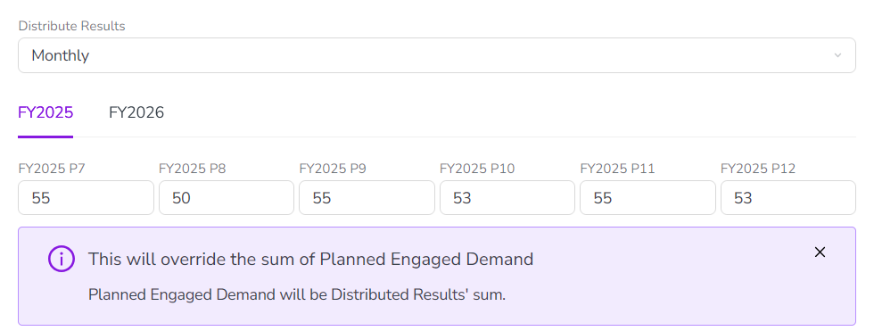
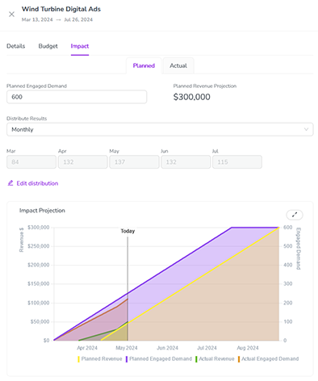
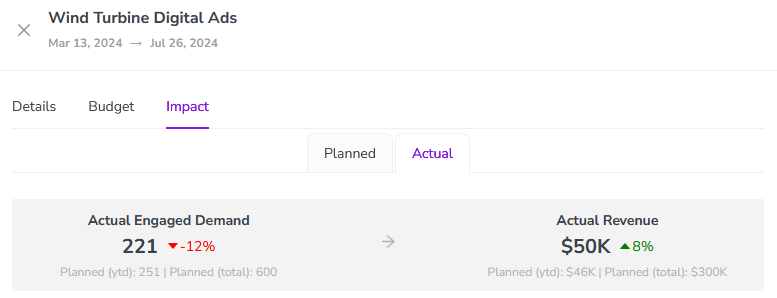

Track and analyze pipeline impact
In Uptempo Campaign Management, impact modeling helps you to demonstrate the impact of your activities on the demand pipeline, and links your marketing efforts to business results.
With impact modeling, you can set up a detailed model of your demand generation funnel in Uptempo. By entering the demand an activity is intended to generate into this impact model, you can create projections of how your initiatives are likely to influence revenue over time. This makes it easier to align marketing plans with organizational goals and to communicate expected value to stakeholders.
Impact modeling also supports better decision-making during planning. By making the expected impact of activities visible upfront, you can prioritize activities with the greatest potential return, and adjust plans before resources are committed. As execution progresses, Impact Modeler provides a reference point for evaluating whether activities are performing as expected, and where corrective action may be needed.
How impact modeling works
During the planning phase, you can capture the number of inquiries or leads an activity is expected to generate. These assumptions are fed into a model of your demand funnel (which includes typical conversion rates between funnel stages, velocity, and average deal sizes). The model uses these inputs to project anticipated revenue from an activity, and the timing of that revenue.
During the execution phase, you can record actual results for inquiries or leads created by the same activities, as well as for revenue generated by closed/won deals. By comparing targets and results in real time, you can quickly see what’s working and what’s not, so that you can make informed decisions about how to adjust your strategy.
You can enter impact data for planned targets and actual results at any level of your activity hierarchy. All impact data automatically aggregates up to the top of the activity hierarchy along hierarchy paths, so you can get full insight into performance at every level of your marketing plan.
About the impact model
Your Uptempo administrator sets up the impact model that the system uses to generate projections. The impact model consists of the following parts:
A model of your organization's demand generation funnel. This model defines the stages that you track as customers move through the sales pipeline, from lead to closed/won deal.
Default funnel performance assumptions, such as typical conversion rates (the rate at which leads move from one funnel stage to the next), velocities (how fast they move between stages), and the average value of a closed/won deal.
Scenario-based overrides for the default assumptions, based on activity attributes. For example, you can set overrides for scenarios such as if the average deal size for a given product is higher or lower, or if deals in a particular market close faster or slower.
When you enter a planned demand target for an activity, Uptempo plugs this input into the impact model and generates a projection of how much revenue the activity is expected to generate, and when. To do this, it uses scenario-based performance assumptions if available (determined by the attributes set on the activity), or otherwise uses the default assumptions if no available scenario applies.
View activity impact data
For each activity, the Impact section of the activity's details panel contains its impact data. Here, you can view existing impact data, projections, and results, as well as enter planned and actual impact data.
View an activity's impact data
In the Activities section, click on the activity for which you want to view impact data. The activity's details panel opens.
In the details panel, click the Impact section to open it.
The Impact section contains two tabs:
- Planned
Use this tab to enter and view a planned target for demand generated by the activity.
- Actual
Use this tab to enter and view actual results for the demand and revenue attribute to the activity, and compare them to the planned targets.
Planned demand targets and projected impact
You enter the target demand that you plan to generate in the Planned tab of an activity's Impact section. After you enter a target, the impact model displays a projection of how the planned demand is expected to influence revenue over the time period during which the activity is in-market.
Enter planned demand targets for an activity
In the Activities section, click on the activity for which you want to enter planned demand targets. The activity's details panel opens.
In the details panel, click the Impact section.
Click the Planned tab.
Enter the planned demand target (for example, the number of inquiries you expect the activity to generate) into the input field:

Click anywhere outside the input field to stop editing it.
The planned demand target you entered is saved automatically, and is used to generate an impact projection for the activity.
Adjust how planned demand is distributed
By default, the impact model projection assumes that the planned demand is generated evenly across the period defined by the activity's in-market dates. But for activities with longer in-market periods, the generated demand might be unevenly distributed within the in-market period: for example, you might expect to see a peak in demand during the holiday period, followed by a dip afterward, with a corresponding peak and dip in revenue.
In this situation, you can adjust how the planned demand is distributed across the in-market period to generate more accurate revenue projections.
Adjust planned demand distribution for an activity
On the activity's details panel, go to Impact > Planned.
If you haven't done so yet, enter the planned demand target for the activity into the input field.
In the Distribute Results menu, choose the time granularity you want to use when distributing the planned demand target:
- Monthly/Periodically
Enter separate demand target figures for each month or fiscal year period in the in-market period.
- Quarterly
Enter separate demand target figures for each quarter in the in-market period.
- None
Enter a single demand target figure for the entire in-market period.
Additional input fields appear according to the time granularity you chose. If the in-market period spans multiple years, a control to switch between the years is also displayed:

To adjust the planned demand targets in each input field, click
 Edit distribution. The input fields are unlocked, and you can change their values:
Edit distribution. The input fields are unlocked, and you can change their values: 
The planned demand targets you enter are saved automatically.
View impact projections
After you enter a planned demand target for an activity, the system uses it to generate and display an impact projection chart on the Planned tab of the Impact section in the activity's details panel:

Initially, the chart displays line graphs to visualize planned demand (in purple) and planned revenue (in yellow) over time.
After you add actual results, the chart additionally displays line graphs to visualize actual demand (in orange), and actual revenue (in green), for comparison.
The time period represented by the chart's x-axis starts with the activity's in-market start date. It ends on the date the revenue from the last closed/won deal is planned to be realized, the date when the last actual revenue was generated, or the current date, whichever is latest.
When the impact projection is displayed, you can also see details about the funnel assumptions that the impact model used to generate the projections.
View funnel assumptions for an activity's projections
On the activity's details panel, go to Impact > Planned.
Click Show Funnel Assumptions.
A visualization of your demand funnel is displayed:

The funnel stage names, and the assumed conversion rates and velocities, are displayed in the center of the funnel diagram
The number of leads projected to move on to the next stage are shown on the left of the funnel diagram
The projected revenue generated is shown on the right of the funnel diagram
The basis for the assumptions used is noted below the funnel diagram.
To hide the funnel assumptions again, click Hide Funnel Assumptions.
Actual demand and revenue results
You enter the actual demand and revenue results achieved in the Actual tab of an activity's Impact section. After you enter actual results for a KPI, Uptempo automatically displays them on the impact projection chart (on the Planned tab), so you can visualize how the activity performed compared to the projections:

Enter actual demand and revenue results for an activity
In the Activities section, click on the activity for which you want to enter actual demand and revenue results. The activity's details panel opens.
In the details panel, click the Impact section.
Click the Actual tab and scroll down to the input table.
Optional: Use the Time Granularity menu to select the time granularity you want to use when entering results:
- Total
Enter results as a single total figure for the entire in-market period. This is the default setting.
- Monthly/Periodically
Enter separate results figures for each month or fiscal year period in the in-market period.
- Quarterly
Enter separate results figures for quarter in the in-market period.
If you select Monthly/Periodically or Quarterly, additional rows are added to the table according to the granularity you chose. Click
 Add month/quarter to add more table rows.
Add month/quarter to add more table rows.Enter your actual demand and revenue results into the table. There are table columns for each stage of your demand funnel, and for each stage at which you track revenue:

To save your demand and revenue results, click Save.
The results you entered are displayed in aggregated form on the Actual tab, with a color-coded percentage comparison to the planned/projected figures:
